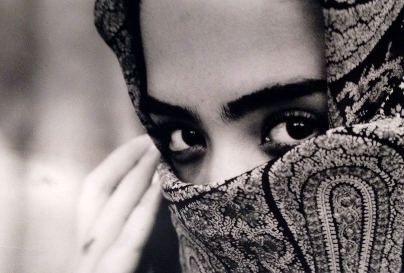

Aedo Photography
I'm a photojournalist ready for any photography endeavor. I also do studio and event photography. I have been taking photos for five years now. I have interned with photographers shooting for Florida State Tourism and Florida Sportsman Magazine. I've learned a lot from those companies and am eager to learn more. I am interested in international work and non-profit orgainizations. Aside from being a photographer, I have also written articles for the Gainesville Sun and The Independent Alligator. There is more about my projects and writing on my 'about me' tab. Check out my work for yourself and see what interests you.

The woman in the photo is Franchella Ales a student at Florida Internationl University in Miami. She volunteered to be my model for my black and white film series.